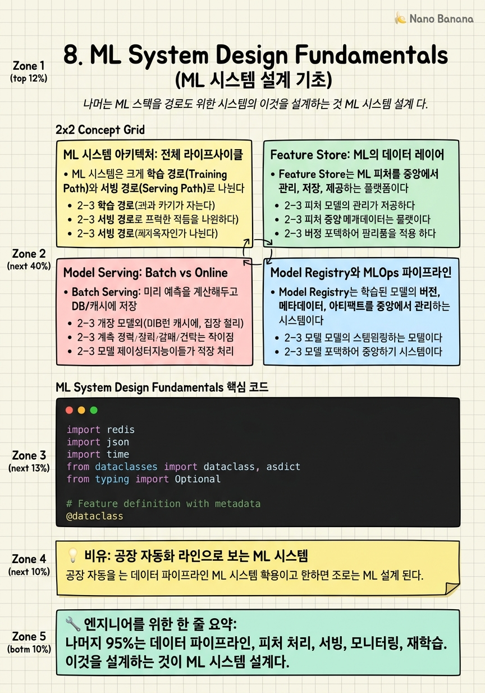

ML System Design Fundamentals

🎯 학습 목표
- ML 시스템을 단순 모델을 넘어 데이터 수집 → 처리 → 학습 → 배포 → 모니터링의 파이프라인으로 설계할 수 있다
- Feature Store의 역할과 Online/Offline Feature Store의 차이를 설명할 수 있다
- Batch Serving과 Online Serving의 트레이드오프를 알고 적합한 사용 사례를 설명할 수 있다
- Model drift, Data drift를 감지하고 대응하는 시스템을 설계할 수 있다
- Shadow Mode, Canary Release, A/B Test를 활용한 안전한 모델 배포 전략을 설명할 수 있다
"머신러닝 모델이 전체 ML 시스템의 5%에 불과하다"라는 말이 있다. 나머지 95%는 데이터 수집, 피처 처리, 서빙 인프라, 모니터링, 재학습 파이프라인이다. 구글은 이것을 [Machine Learning: The High-Interest Credit Card of Technical Debt](https://proceedings.neurips.cc/paper/2015/file/86df7dcfd896fcaf2674f757a2463eba-Paper.pdf) 논문에서 명확히 설명했다.
빅테크 AI Engineering 면접에서는 이 95%를 설계하는 능력을 본다. 단순히 "BERT 모델을 fine-tuning 해서 배포한다"가 아니라, 학습 데이터는 어떻게 수집하고 정제하는가, 피처는 어떻게 계산하고 저장하는가, 배포는 어떻게 하고 실패하면 어떻게 롤백하는가, 운영 중 모델이 나빠지면 어떻게 감지하는가.
이 챕터는 일반 ML 시스템의 설계 패턴을 다룬다. 챕터 9에서 추천 시스템, 챕터 10에서 LLM 인프라로 심화한다.
핵심 내용
ML 시스템 아키텍처: 전체 라이프사이클
ML 시스템은 크게 학습 경로(Training Path)와 서빙 경로(Serving Path)로 나뉜다. 두 경로가 공유하는 것은 피처 처리 로직(Feature Engineering)이다.
학습 경로:
1. 데이터 수집 — 이벤트 로그, DB 덤프, 외부 데이터 소스. Kafka/Kinesis로 실시간 수집, S3/GCS에 raw 데이터 저장.
2. 데이터 처리 — 결측치 처리, 이상치 제거, 정규화, 인코딩. Apache Spark, Beam으로 대규모 배치 처리.
3. 피처 엔지니어링 — 원시 데이터에서 모델에 유용한 표현 생성. 이 결과물이 Feature Store에 저장됨.
4. 모델 학습 — GPU 클러스터에서 학습. 학습 결과(가중치, 메타데이터)는 Model Registry에 저장.
5. 모델 평가 — Offline metrics (AUC, F1, RMSE). 기준을 통과해야 다음 단계로.
6. 모델 배포 → 서빙 경로로 전달.
서빙 경로:
실시간 요청 → 피처 조회 → 모델 추론 → 응답 반환. p99 latency가 수십~수백ms 이하여야 하는 경우가 많다.
훈련-서빙 불일치 (Training-Serving Skew):
ML 시스템의 가장 흔한 버그 중 하나. 학습 시 피처 계산 방법과 서빙 시 피처 계산 방법이 달라서 모델이 프로덕션에서 나쁜 성능을 내는 문제. Feature Store가 이 문제를 해결한다 — 학습과 서빙이 동일한 피처 계산 로직을 공유하므로.
Feature Store: ML의 데이터 레이어
Feature Store는 ML 피처를 중앙에서 관리, 저장, 제공하는 플랫폼이다. Uber의 Michelangelo, Google의 Feast, AWS SageMaker Feature Store가 대표적이다.
왜 Feature Store가 필요한가?
- 피처 재사용: 팀 A가 만든 "사용자 7일 구매 금액" 피처를 팀 B도 바로 사용 - Training-Serving Skew 방지: 같은 피처 계산 코드를 학습/서빙 모두 사용 - 피처 공유: 여러 모델이 같은 피처를 공유하여 중복 계산 제거 - Point-in-time Correct: 학습 시 미래 데이터가 새지 않도록 시점 기준 조회
Offline Feature Store:
- 배치 학습 데이터 생성에 사용 - 히스토리컬 피처 저장 (수개월~수년) - 낮은 QPS, 높은 처리량 - 저장소: S3, BigQuery, Hive
Online Feature Store:
- 실시간 서빙에 사용 (추론 시 피처 조회) - 최근 피처만 저장 (수일~수주) - 초저지연 (p99 < 10ms), 높은 QPS (초당 수십만) - 저장소: Redis, DynamoDB, Cassandra
Streaming Feature Store:
실시간으로 들어오는 이벤트에서 피처를 즉시 계산. 예: 지난 1시간 클릭 수, 마지막 검색어. Kafka + Flink로 실시간 피처 계산 → Online Feature Store에 저장.
Model Serving: Batch vs Online
Batch Serving:
미리 예측을 계산해두고 DB/캐시에 저장. 요청 시 미리 계산된 결과 반환.
- 적합한 경우: 예측 대상이 제한적 (활성 사용자 100M명), 실시간성 불필요 (매일 갱신되는 추천 목록), 모델 추론이 매우 무거운 경우 - 예: Netflix의 매일 갱신되는 홈 화면 추천 - 장점: 서빙 인프라 단순. 응답 latency 최소 (DB 조회만).
- 단점: 최신 컨텍스트 반영 불가 (방금 본 영상 반영 안 됨)
Online Serving (Real-Time Inference):
요청 시 실시간으로 모델 추론.
- 적합한 경우: 개인화가 중요하고 최신 컨텍스트가 필요한 경우, 추론 latency가 수십ms 이하인 경우 - 예: Google 검색, 실시간 CTR 예측 - 장점: 최신 컨텍스트 반영, 진정한 개인화 - 단점: 서빙 인프라 복잡. 높은 QPS에서 GPU 비용 증가.
Hybrid Serving:
실제로는 두 방식을 계층으로 조합한다: - Batch로 사전 계산한 후보군 생성 (수천 개) - Online으로 실시간 re-ranking (최신 컨텍스트 반영) - 최종 결과 반환
모델 서빙 최적화:
- 모델 압축: 양자화(Quantization), 지식 증류(Knowledge Distillation), Pruning으로 모델 크기 축소 - 배치 추론: 여러 요청을 묶어 GPU 처리 효율 극대화 - 모델 캐싱: 같은 입력에 대한 결과 캐시 (Semantic Cache for LLM) - 하드웨어 가속: NVIDIA Triton Inference Server, TensorRT로 GPU 최적화
Model Registry와 MLOps 파이프라인
Model Registry는 학습된 모델의 버전, 메타데이터, 아티팩트를 중앙에서 관리하는 시스템이다. MLflow, SageMaker Model Registry, Weights & Biases가 대표적.
Model Registry에 저장되는 것: - 모델 가중치 (Artifacts) - 학습에 사용된 데이터셋 버전 - 학습 하이퍼파라미터 - Offline 평가 지표 (AUC, F1, RMSE) - 데이터 스키마 (피처 이름, 타입, 범위)
MLOps 파이프라인 (CI/CD for ML):
소프트웨어 CI/CD처럼 ML 모델도 자동화된 파이프라인으로 테스트하고 배포한다.
1. 코드 변경 → Git push 2. CI: 데이터 validation, 코드 테스트 3. 학습 파이프라인 실행 (Kubeflow, MLflow, Airflow) 4. 자동 모델 평가 — 기준 미달 시 자동 실패 5. Model Registry에 등록 6. 스테이징 환경 배포 → Integration test 7. Shadow Mode 배포 → 트래픽 미전환 상태에서 실제 요청으로 예측 (결과는 로그만) 8. Canary Release → 1% 트래픽으로 시작, 점진적 증가 9. 전체 배포 or 롤백
이 파이프라인이 없으면 데이터 과학자가 모델을 수동으로 배포하는 "것 같은 모델"이 만들어진다. 코드도 아니고, 데이터도 아니고, 재현 불가능하다.
ML Observability: 모델 모니터링
모델을 배포한 후에도 지속적으로 상태를 모니터링해야 한다. 시간이 지남에 따라 데이터 분포나 사용자 행동이 변하면 모델 성능이 저하되는 Model Drift가 발생한다.
Data Drift (Feature Drift):
프로덕션에서 들어오는 입력 데이터의 분포가 학습 데이터와 달라지는 현상. 예: COVID로 사용자 행동 패턴이 갑자기 변함.
감지 방법: KS test, Population Stability Index (PSI) 등 통계적 검정으로 분포 변화 감지.
Concept Drift:
입력(X)과 출력(Y) 사이의 관계 자체가 변하는 현상. 사기 탐지 모델은 사기 패턴이 계속 변하므로 concept drift가 빠르다.
Model Monitoring 지표:
| 지표 | 설명 | |---|---| | Prediction Distribution | 예측값의 분포 변화 | | Feature Distribution | 입력 피처의 통계 변화 | | Business Metrics | CTR, 전환율, 매출 — Ground Truth와 연결 | | Latency/Error Rate | 서빙 시스템의 성능 |
모니터링 시스템 아키텍처:
서빙 로그 → Kafka → 통계 계산 (Spark Streaming) → 대시보드 (Grafana, Looker) → 알람 (PagerDuty)
Retraining 트리거: - 성능 지표가 임계값 아래로 떨어짐 - Data drift 감지 - 주기적 재학습 (시간 기반: 매주, 매월) - 이벤트 기반 (특정 사건 후 즉시)
💡 비유로 이해하기
ML 시스템은 자동차 공장 생산 라인과 같다. 원자재(데이터)가 공장에 들어와 여러 가공 단계(데이터 처리, 피처 엔지니어링)를 거쳐 완성품(학습된 모델)이 나온다. 이것이 Training Pipeline이다.
Feature Store는 부품 창고다. 생산 라인(학습)과 조립 라인(서빙) 모두 같은 창고에서 같은 규격의 부품을 가져간다. 창고가 없다면 각 라인이 같은 부품을 따로 만들고, 규격이 미세하게 달라서 문제가 생긴다.
Model Monitoring은 품질 관리 부서다. 공장에서 자동차가 나와 시장에 출하된 후에도, 불량 신고(사용자 불만, 비즈니스 지표 하락)가 오면 즉시 파악하고 생산 라인을 조정한다. A/B Testing은 두 가지 설계의 자동차를 소수 고객에게 먼저 출하해보고 반응을 측정하는 것이다.
💻 코드 예시
간단한 Feature Store와 ML Serving 파이프라인을 구현한다. Online Feature Store(Redis)에서 피처를 조회하여 모델 추론까지의 흐름을 보여준다.
import redis
import json
import time
from dataclasses import dataclass, asdict
from typing import Optional
# Feature definition with metadata
@dataclass
class UserFeatures:
user_id: str
age: int
purchase_count_7d: int
avg_session_duration_min: float
last_category_viewed: str
computed_at: float # Timestamp for staleness check
class OnlineFeatureStore:
"""Redis-backed Online Feature Store for real-time serving."""
STALE_THRESHOLD_SEC = 3600 # 1 hour
def __init__(self, redis_client: redis.Redis):
self.r = redis_client
def save_features(self, features: UserFeatures, ttl: int = 86400):
key = f"features:user:{features.user_id}"
self.r.hset(key, mapping=asdict(features))
self.r.expire(key, ttl)
def get_features(self, user_id: str) -> Optional[UserFeatures]:
key = f"features:user:{user_id}"
data = self.r.hgetall(key)
if not data:
return None
# Check staleness
computed_at = float(data[b'computed_at'])
if time.time() - computed_at > self.STALE_THRESHOLD_SEC:
return None # Trigger feature recomputation
return UserFeatures(
user_id=data[b'user_id'].decode(),
age=int(data[b'age']),
purchase_count_7d=int(data[b'purchase_count_7d']),
avg_session_duration_min=float(data[b'avg_session_duration_min']),
last_category_viewed=data[b'last_category_viewed'].decode(),
computed_at=computed_at
)
class MLServingPipeline:
def __init__(self, feature_store: OnlineFeatureStore, model):
self.fs = feature_store
self.model = model
def predict(self, user_id: str, item_id: str) -> float:
# 1. Retrieve features (fast — Redis, not DB)
features = self.fs.get_features(user_id)
if features is None:
return self._fallback_score() # Graceful degradation
# 2. Assemble feature vector
feature_vector = [
features.age / 100.0,
min(features.purchase_count_7d / 50.0, 1.0),
min(features.avg_session_duration_min / 60.0, 1.0),
]
# 3. Model inference
return self.model.predict([feature_vector])[0]
def _fallback_score(self) -> float:
return 0.5 # Default score for cold-start users온라인 서빙에서 피처 조회(Redis) → 모델 추론의 흐름이 핵심이다. computed_at 검사로 stale feature를 감지하고 재계산을 트리거한다. _fallback_score()는 피처가 없는 신규 사용자(cold start)에 대한 graceful degradation이다. 프로덕션에서 예외 처리 없는 ML 서빙은 피처 누락 시 서비스 전체가 영향을 받는다.
🏭 현업에서의 평가
✅ 시니어가 보는 것
- Training-Serving Skew 문제를 인지하고 Feature Store로 해결책을 제시하는가
- A/B Testing과 Shadow Mode 배포를 언제 어떻게 쓰는지 아는가
- Model drift 감지와 재학습 트리거 전략이 있는가
- Cold Start 문제에 대한 fallback 전략이 있는가
⚠️ 레드 플래그
- 모델 학습만 설계하고 서빙, 모니터링은 "나중에"라고 미루는 설계
- Feature Store 없이 각 서비스가 독립적으로 피처를 계산하는 설계
- 모델 배포 = docker 이미지 올리기로만 생각하는 경우
- Offline 지표만 보고 Online A/B Test를 생략하는 설계
🎤 예상 인터뷰 질문
- YouTube의 영상 조회수 예측 ML 시스템을 설계해봐.
- Training-Serving Skew를 어떻게 감지하고 방지하겠어?
- 새 모델 버전을 안전하게 프로덕션에 배포하는 전략을 설명해봐.
✨ 핵심 요약
모델은 시스템의 5%
나머지 95%는 데이터 파이프라인, 피처 처리, 서빙, 모니터링, 재학습. 이것을 설계하는 것이 ML 시스템 설계다.
Feature Store가 Skew를 막는다
학습과 서빙이 동일한 피처 계산 로직을 공유. Training-Serving Skew의 가장 효과적인 해결책.
Online vs Offline Feature Store
Online(Redis) = 저지연 서빙용, Offline(S3/BigQuery) = 배치 학습용. 둘을 함께 사용.
Batch + Online Hybrid가 현실
순수 실시간 추론은 비용이 크다. Batch로 후보군 생성, Online으로 re-ranking하는 Hybrid가 표준.
Shadow Mode → Canary → 전체
새 모델을 바로 전체 배포하지 않는다. Shadow → 1% Canary → 점진적 증가 → 100%. 각 단계에서 롤백 준비.
Model Drift는 피할 수 없다
데이터와 세계는 변한다. 모니터링 없이 배포한 모델은 조용히 죽는다. 배포 전에 모니터링 시스템을 설계하라.
MLOps = ML의 CI/CD
코드 변경부터 프로덕션 배포까지 자동화. 수동 배포는 재현 불가능하고 오류가 많다.
Cold Start에 Fallback
신규 사용자나 신규 아이템은 피처가 없다. 항상 합리적인 fallback 전략을 설계하라.